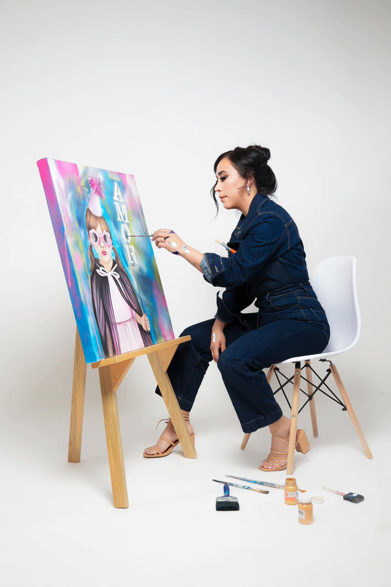

Galería de Ejemplos
Algunos de nuestros trabajos en sesiones fotográficas personales.

Descripción de Servicios
Ofrecemos una amplia variedad de servicios de fotografía personal adaptados a tus necesidades:
- Sesiones Individuales: Capturamos tu esencia en retratos profesionales.
- Fotos para Redes Sociales: Ideal para influencers y quienes necesitan contenido de calidad.
- Fotos Lifestyle: Capturas naturales de tu vida cotidiana o tus hobbies.
Proceso de Trabajo
Nos aseguramos de que todo salga perfecto desde el inicio hasta la entrega final de las fotos y videos:
- Reunión inicial para conocer tus expectativas y preferencias.
- Cobertura completa del evento por fotógrafos profesionales.
- Entrega de fotos y videos editados de acuerdo a tus gustos, ya sea en formato digital o impreso.
Proceso de Trabajo
Nos aseguramos de que tu experiencia sea cómoda y profesional en todo momento:
- Nos reunimos para entender tus necesidades y estilo deseado.
- Te guiamos durante la sesión para que te sientas a gusto.
- Entregamos fotos editadas y personalizadas en tiempo récord.
- Cobertura flexible (por horas)
- Múltiples cambios de vestuario
- Sesiones en exteriores o en estudio
Preguntas Frecuentes
- ¿Cómo debo prepararme para la sesión? Usa ropa con la que te sientas cómodo y que refleje tu personalidad.
- ¿Cuánto tiempo dura una sesión? Entre 1 y 2 horas, dependiendo del paquete elegido.
- ¿Cuánto tiempo tarda la entrega de fotos? Normalmente entre 5 a 7 días laborales.